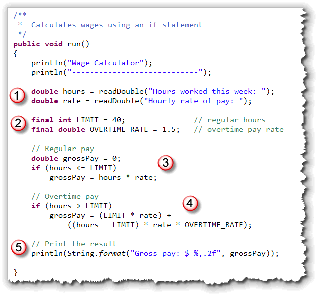
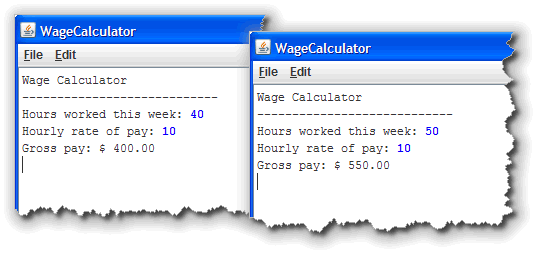
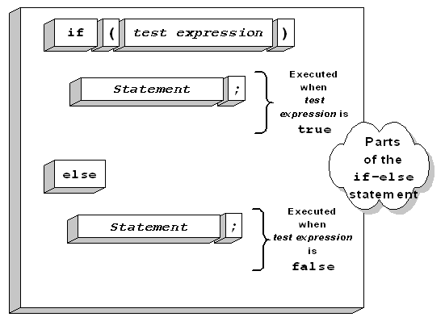
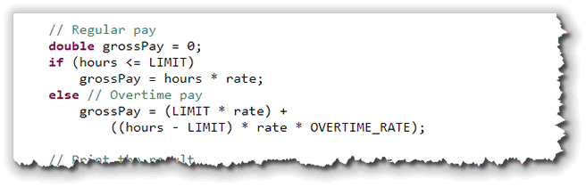
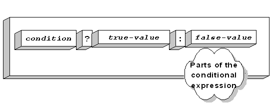
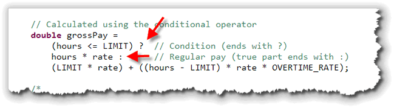
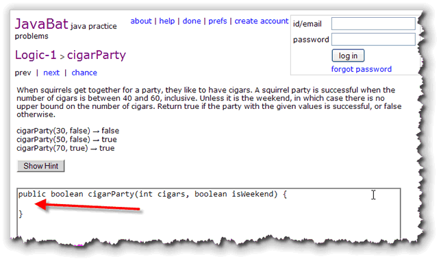
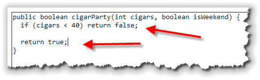
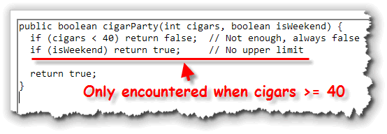
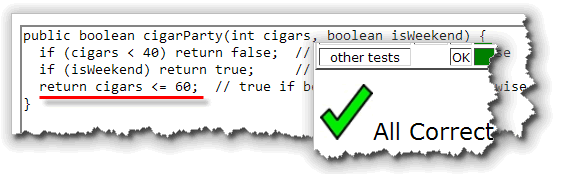

The relational operators,
and the boolean values that they produce, are
important because they allow us to implement selection.
Selection acts like a "highway divider" in your code; one minute
you're on a trip to Boy Scout Mountain, the next you're knee deep
in smoking men, and running around the desert with Gillian Anderson.
With selection, a relational operator is normally used to test two values. This test is called a condition. If the result of the test is true, then a particular section of code is executed; if the condition is false, then that section of code is skipped, and, perhaps, an alternative section of code is executed.
Here is an example of a selection statement using English like pseudocode:
If your salary is less than $ 25,000 then
Calculate tax based on 15% marginal rate
otherwise
Calculate tax based on 15% base rate
and a 28% marginal rate
Selection is also called branching, because any time you run the program you may take a different path through the code. Java has five different kinds of branching or selection statements that you will learn about in this unit and the next:
- The
ifstatement - The if-
elsestatement - Nested
ifandif-else-ifstatements - The
switchstatement - The conditional operator (
?:)
In the rest of this lesson, you'll meet your first selection
statement, the if statement. Once you
learn how to use if, your programs will be
able to make decisions.
The if Statement
The if statement is the
first, and simplest, branching instruction that we'll cover. Like
classes and methods, the if statement consists of
two parts: a header and a body.
With the if statement, the "header" is a
boolean condition to be tested. The body of the
if statement contains code to be executed.
Each if executes a single section of code
after testing its boolean condition. If the condition
is true, then the code is executed; if the condition
is false, the code is skipped.
Unlike a method body, the code contained in the body of
an if statement does not need to be enclosed in
braces. If you do not use braces, however, only a single
statement will be executed.
Syntax
This illustration below shows the syntax of the if
statement. (Click the image to enlarge it and display
in another window.)
 Here are the important points to understand about the
Here are the important points to understand about the
if statement syntax:
- The
ifstatement begins with the keywordif. It must be in lowercase; you cannot use If or IF. - The condition following the
ifkeyword must—when evaluated—produce abooleanvalue. That means you can usebooleanliterals, (although you really shouldn't),booleanvariables, or, (most likely), a relational expression. - Make sure you don't put a semicolon after the condition. When you do this, the body of the statement becomes what is known as a "null" statement. It is perfectly legal, but meaningless. If you put a semicolon after the condition, you are saying, "In the event that this condition is true, don't do anything."
- The parentheses are required, unlike in Pascal or Visual Basic.
- The body of an
ifstatement is a single statement, ending with a semicolon. The statement will be executed if the condition is true.
Let's look at a simple example, to see how the if statement works in practice.
Calculating Wages
Let's start with a really simple example. Here's an ACM
console program that asks the user to enter the number of
hours worked and the hourly wage and then calculates
the gross pay.

Let's look at each of the pieces:- The program begins by printing a heading and
then asking the user for the hours worked and the
hourly wage. These are stored in the
doublevariableshoursandrate. - Rather than using magic numbers for the overtime limit and the overtime rate, I created two constants. Then, when the USA joins the civilized world with a 35 hour work week and double-pay for overtime, I'll only have to change these two constants and my program will continue working.
- Next, using an
ifstatement, I calculate the user's gross pay if no overtime is due. To do this, use thebooleanconditionhours <= LIMITto make sure you include the case when the user works exactly 40 hours.Note that the variable
grossPayneeds to be declared before theifstatement is encountered. If you declare it inside theifstatement body, it will not be visible later in your program. - The next section calculates the overtime pay.
For overtime, the worker earns the regular rate for
the original 40 hours. To that you add the overtime pay,
which is calculated by first finding the amount of
overtime hours (
hours - LIMIT) and then multiplying that by the overtime rate (rate * OVERTIME_RATE). - Finally, the program prints the results using
println()andString.format().
Here's what the program looks like when it runs showing
both blocks of code:

Note that in the run on the left, the worker puts in 40 hours at $10 per, for $400 and no overtime. In the run on the right, the worker toils for 50 hours or 10 hours of overtime. She gets paid $400 in regular wages and another $150 in overtime.Using if-else
One problem with WageCalculator.java
is that even when when there is no overtime, (that is,
when hours is less-than-or-equal to 40),
your code still checks to see if hours is
greater than 40. This really makes no sense at all
because the two choices are obviously mutually
exclusive:
- If
hours <= LIMITistruethenhours > LIMITcould not betrue. - If
hours > LIMITistruethenhours <= LIMITcould not also betrue. - There are no possible values for
hourswhere one of these two conditions is nottrue. Every possible value fits into one or the other.
Since it is inefficient to test a condition that we
already know is false, Java provides a second portion
for the if statement, called the else
clause. You can see the syntax for the
if-else statement in the
illustration.

When you use the else keyword, the if
statement takes one action when a test is true, and a
different action when the test is false. This is much
more efficient because the original comparison is made only once.
If we modify WageCalculator.java like this:

the program works the same, is a little clearer and is less succeptible to inadvertant errors.Blocks, Indentation, Style, and Pitfalls
Often, you need to execute more that one statement whenever a
logical condition is true. In such cases, you enclose the
if-else statement body in braces,
(called a block), just
like you would for the body of a class or method.
When you write an if statement, you should
indent the statements inside the body of the if
and the else portions. Each line should be indented
at least two spaces and no more than five spaces.
You can configure Eclipse to specify the number of spaces that get inserted whenever you press the TAB key. I prefer four spaces, and that's how I've configured the CS 170 Eclipse workspace that you are using.
Indenting Style
There are three common indentation styles you'll see in code, but for this class, I'd like you to use the "ANSI" style braces. (See the CS 170 Styleguide for more information).
With "ANSI" style braces, the opening brace is placed immediately
below the keyword if. Each line inside the body is
indented one tab, and the closing brace is lined up with the
opening brace. The advantage of this style is that it makes
it easy to match your braces without looking back and forth
at the right and left margins.
Here's a code section indented correctly:
if (amountSold <= 35000)
{
bonusPct = .035;
bonusAmt = amountSold * bonusPct;
}
else
{
bonusPct = .075;
bonusAmt = amountSold * bonusPct + 100;
}
Your book uses the traditional C "K&R" style (which the Sun source code also uses). With K&R style layout, the opening brace of each control structure appears on the same line as the Boolean condition. You may use this style if you like.
Why Use Braces?
Braces are not required when the body of an if
statement consists of a single line of code. Nevertheless,
it is a good idea to put them in. Here's why.
Suppose that you wrote the original code, listed below, so that a salesperson with sales above $35,000 received a 7½ % bonus, and salespersons earning less than that received a 3½ % bonus. Your original code might look like this:
if (amountSold <= 35000)
bonusPct = .035;
else
bonusPct = .075;
bonusAmt = amountSold * bonusPct;
After this original program was delivered, however, your company decides that the high-performing salesfolk should each get an additional bonus of $100 as well, so you add the following lines of code:
bonusAmt = 0;
if (amountSold <= 35000)
bonusPct = .035;
else
bonusPct = .075;
bonusAmt += 100;
bonusAmt += amtSold * bonusPct;
Despite your best intentions, and despite the fact that the program compiles, it does not do what you want it to do.
Because the body of the else portion of the
if statement does not use braces, it consists of
the single statement assigning a bonusPct
of 7½ %. The following statement, which you intended to apply
only to high-performing salespeople, is, despite the indentation,
applied to everyone.
My personal rule of thumb to avoid this kind of
problem is to always use braces for an if
statement, unless the entire statement can fit on one line, like
this:
if (amt < 100) cost = .23;
The Phantom Semicolon
Another common mistake when writing an if statement
is to insert a semicolon after the if
statement condition, like this:
if (filesAreAllBackedUp);
{
formatDrive();
}
Despite the admirable safety-check applied in this example, the hard-drive is still formatted, no matter whether the files are backed up or not. This null body says, in effect:
- Check to see if
filesAreAllBackedUpis true. - If it is true then do nothing (the null statement)
- After checking to see if files are backed up,
call the
formatDrive()method.
Note that formatDrive() does not depend upon the
state of filesAreAllBackedUp.
The Conditional Operator
One problem with using
if-else is that you can't use an
if-else in a formula or
expression;
if-else is a statement; it does
not produce a value. That means, you must create an additional
variable, like bonusPcnt in the earlier example.
Java's, conditional operator provides a way to use an
if-else condition inside an expression.
The conditional operator is sometime called the ternary,
or teriary operator, because it is the only operator
to require three operands.

The operands of the conditional operator are:
- The condition or test expression: This must be
some expression that evaluates to a
booleanvalue. - The true result: If the condition portion is true, then the whole expression takes on the value listed in this clause. This value can be of any type.
- The false result: If the condition portion is false, then the whole expression takes on the value listed here. This value can also be of any type, but should match the type of the true result.
The condition is separated from the results portion by a
question mark ( ? ). The results are separated from each
other by a colon ( : ).
Using the conditional operator, we could calculate
bonusAmt, used in the previous examples, like
this:
bonusAmt = amountSold <= 35000 ?
amountSold * .035 :
100 + amountSold * .075;
This example has been formatted so that each operand used by the conditional operator appears on a separate line, but that's not required.
Here's the WageCalculator example once again,
this time using the conditional operator to calculate
the value for grossPay:

You'll have to decide whether you find this clearer or not. I think that I prefer theif-else instead.
You can also nest another conditional expression (using the conditional operator) inside the true or false portions of a first conditional expression. This quickly becomes unreadable, however, and, despite what you might think, may even execute more slowly. You should attempt to write source code that is clear and to-the-point, not code that uses the fewest possible lines.
Functions and Selection
With procedures, it really doesn't matter (syntactically) if you
always have two alternatives. If you use a simple if
statement, then when the condition is true, the
actions in the body of the statement are executed; when the
condition is false then nothing happens.
With a function, though, that's not really acceptable. With
a function, you have to return a value in each and every case:
when your condition is true and when
your condition is false.
Let's look at a simple example.
The isOdd() Function
You can tell if an integer is odd by using the remainder
operator. If the remainder of the number divided by 2 is 1,
then the number is odd. We can put that algorithm
into a function like this:
 Notice that:
Notice that:
isOdd()is a predicate function. That is, it has abooleanreturn type.- The function has one parameter,
nwhich is the number to test. - If the remainder of the number divided by 2 is 1, we
return
true, just like we said.
So why is Eclipse complaining?
The answer is very simple, yet it is one that students frequently struggle with. A function must return a value for each and every path through the code. This function returns a value when when number is odd. What does it do when the number is even?
Nothing!
Three Solutions
There are three different ways to fix this problem:
- You can add an
elseclause for the case when the number is even like this:

- Since the
returnstatement ends the function when the number is odd (inside theifstatement body), any code following it is only executed when the number is even. That means you really don't need anelse; you can just write this:

Boolean Return Values
The third alternative is a little harder to explain, but you
should make the effort to understand it. Often, the best
way to implement a predicate function is to avoid using
if statements at all, and simply return the
result of the Boolean expression. Let me explain how that
works.
Assume that we take the test expression inside the if
statement, and store it inside a boolean variable.
Once we do that, the variable (result) will
contain true if the number is odd and false
if the number is even.
Then, we can simply return that boolean variable,
instead of the literal values, true or false,
like this:

Of course, we really don't need the variable result,
do we? Instead, we can just return the Boolean expression
result like this:
 This is how you'll normally write a predicate function.
This is how you'll normally write a predicate function.
Multiple Conditions
What if your function needs to test several conditions? Next
week you'll learn how to use Java's logical operators
to combine several Boolean conditions into a single test.
This week, though, you'll learn to do it the old-fashioned
way, just using the return statement.
 Nick Parlente, the Stanford Computer Science professor who
hosts the Nifty Assignments panel at the annual
SIGCSE conference, is something of an expert on squirrels,
like those that hang around the OCC Computing Center.
Nick Parlente, the Stanford Computer Science professor who
hosts the Nifty Assignments panel at the annual
SIGCSE conference, is something of an expert on squirrels,
like those that hang around the OCC Computing Center.
According to Nick, "when squirrels get together for a party, they like to have cigars," much like Tom and Jerry from this old cartoon created when I was a kid.
Now, according to Nick, "a squirrel party is successful when the number of cigars is between 40 and 60, inclusive. Unless it is the weekend, in which case there is no upper bound on the number of cigars."
Let's use Java to write a function named cigarParty()
using the if statement to give our furry friends
some decision-making help. Rather than run this in Eclipse,
we'll use Professor Parlante's online Java practice site,
JavaBat. (No, I don't know what it means.)
You can find the problem at
http://www.javabat.com/ under the Logic section.

Notice that the function header is already written for you. All we have to do is to use theif statement to
write the code where the arrow appears in the picture.
Attempt 1: What is Universal?
To solve a problem like this with multiple conditions, you want to isolate the single condition that has the widest, or most universal application. In this example, that is when the number of cigars is less than 40. In that case, the party is always a failure.
Here's the code we can use to implement that test (along with
a "catch-all" return statement at the end):

When we submit the problem, you'll see that most of the tests now pass.Attempt 2: Refine the Results
Now we've handled the case where cigars are less than 40.
How about the upper bounds? Well, we know that the party
is always successful if it is the weekend. (That is, there
is no upper limit on the number of cigars during the
weekend.) We can implement that by adding another
if statement like this:

Notice that thisif statement is only
encountered when the first condition is false. If
the first condition (cigars < 40) was
true, then the return statement would
end the function.
Now, at this point in your code, (after the if
statement just added), you don't have to worry about the
weekend any more. If it is the weekend, the function has
ended. So, if it is not the weekend, we need to
return true if the number of cigars is
less-than-or-equal-to 60, which is the weekday upper limit.
If the number of cigars is greater than that, we must return
false.
Of course, as you saw in the last section, the easiest way to
do this, is to just return the Boolean expression. Replace the
true on the last line with the following
return statement, and your function will pass
all of the tests:

Coming Up . . .
In this lesson you were introduced to the concept of
selection. You learned how to make single-branch
decisions using the if statement and how to
write programs with either-or decisions, using
if-else. Finally, you met the conditional
operator used to introduce simple logic into your
expressions.
In the next lesson, we'll take a look at repeating operations or calculation, using loops.